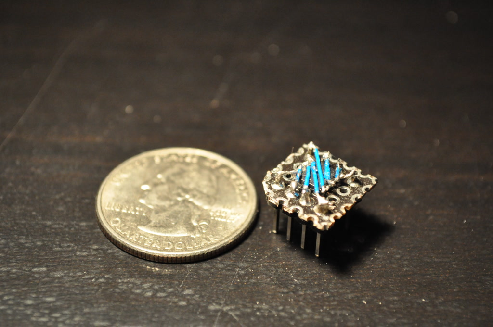
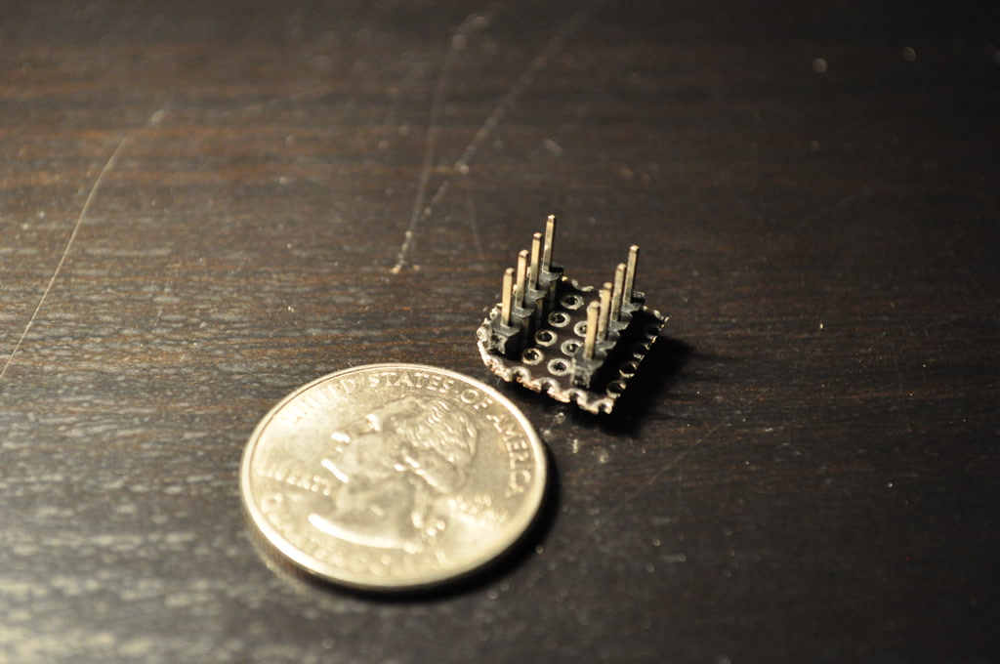
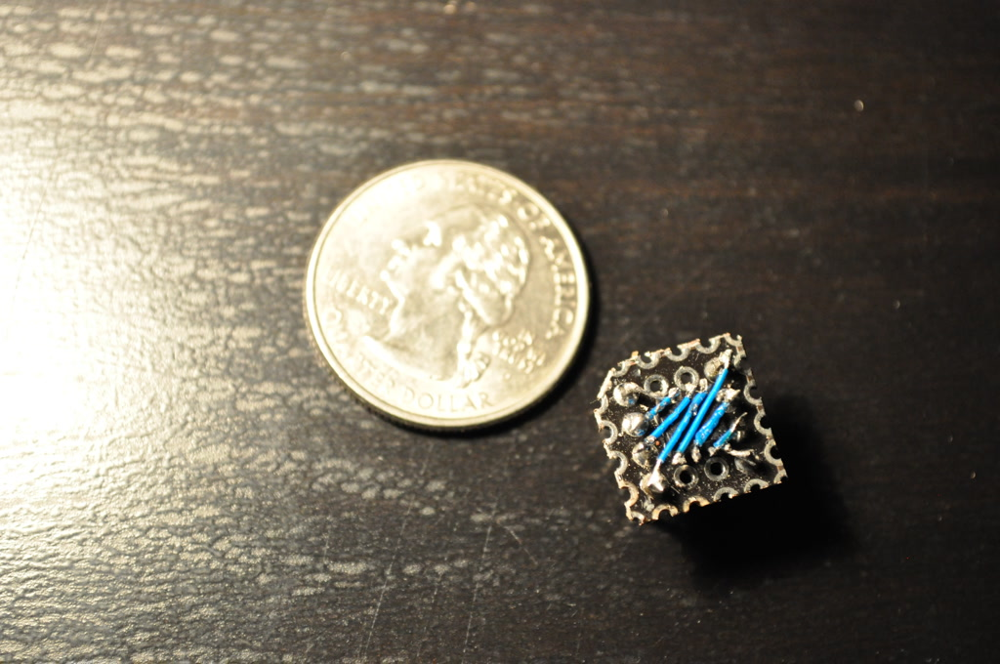
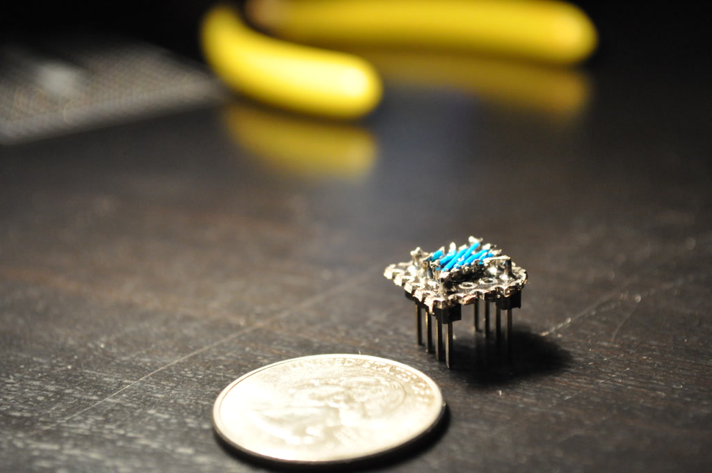

Figure 1. An SMD packaged chip converted for use on a breadboardSometimes, you only have the surface mount device (SMD) package of a chip to work with in prototyping, but SMD chips do not fit into breadboards. Common ways to solve this problem are getting the dual in-line package (DIP) version of the chip or soldering the chip to an SMD break-out board. What if you really needed to use the chip NOW? An alternative to the sensible options aforementioned is converting your SMD chip manually by soldering them to headers.
Here, I solder an SOIC chip (a MCP2551 in this case) to a perforated prototyping board with headers. The chip is flipped upside down to prevent its pins from touching the plated vias. Flipping the chip also brings the chip's pins to an easily accessible height for soldering. It may help to scrape some markings on the bottom of the chip to indicate its orientation. The chip is rotated 90 degrees to fit the chip easily between the headers and to prevent fly wires from overlapping.

Figure 2. The soldered header pinsThe headers were soldered on first. Then, a single connection was made between a header pin and a chip pin, so that the chip was securely attached to the board while soldering. The fly wires I used were 30 AWG wire-wrappping wires. A thin enameled wire may be used if there are more pins to connect, since the lack of thick plastic insulation allows more wires to fit across the chip. When I was finished, I clipped a corner off of the board to indicate chip orientation (e.g. indicated the position of the first pin). The entire process took me 45 minutes on the first try. I estimate that it would take me about 30 minutes to do this, if I knew what I was doing.

Figure 3. A top-down view of the soldered chip
Figure 4. A view from the sideWritten on the 21st of November in 2014
{kind=link}
{kind=link}
{kind=link}
{kind=link}